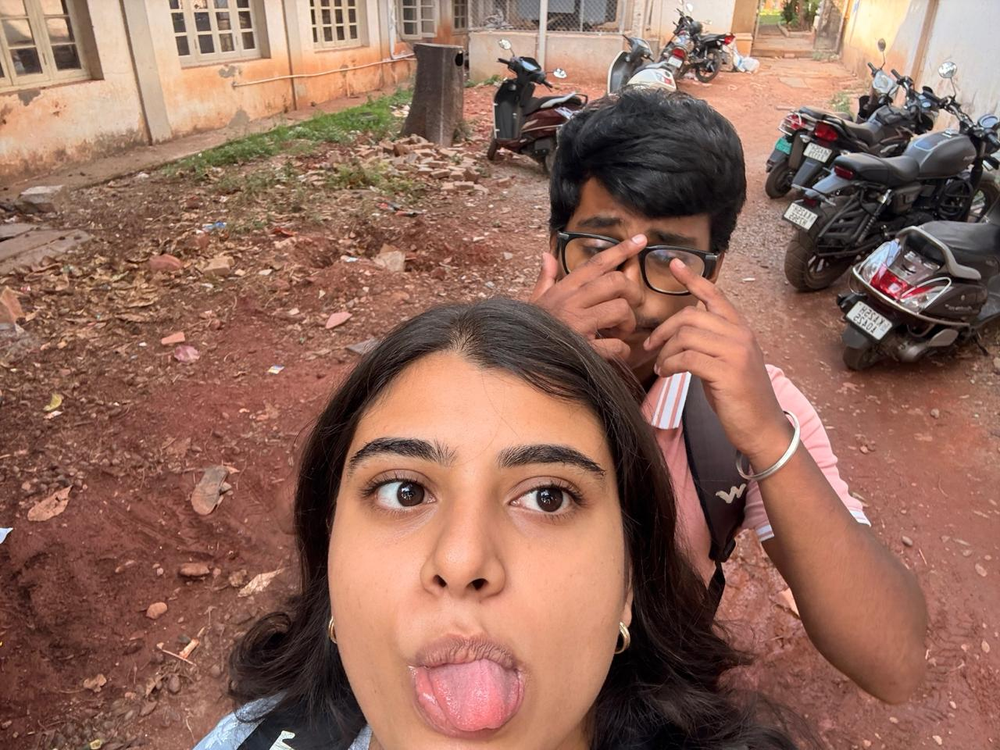
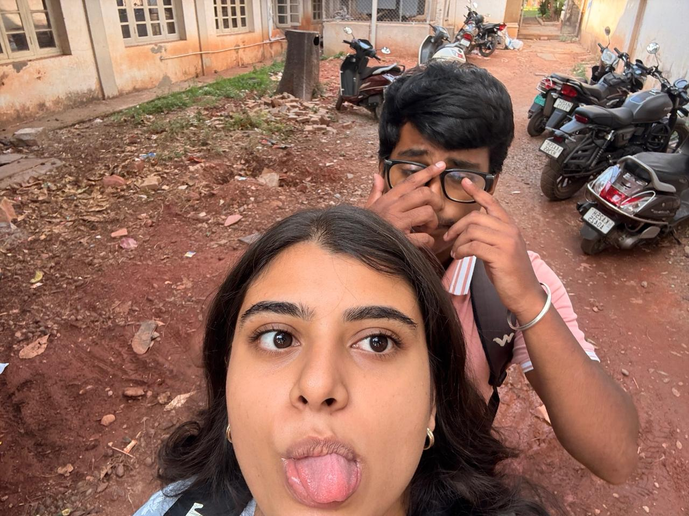
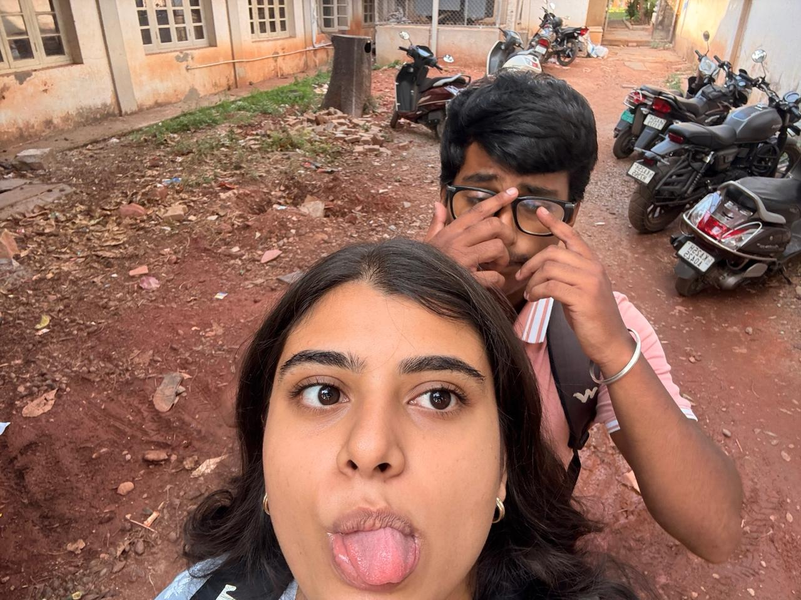

We met in the quiet of something new
A spark in the stillness, I never saw you coming through
You smiled like the sun after endless rain
And in your arms, I forgot all of my pain
But love, it tests the strongest souls
And life, it carves its lines into the roles we hold
There were moments we unraveled, lost in the dark
But even then, you carried pieces of my heart
'Cause no matter the silence, the distance, the fall
You’ve always been the name I hear through it all
In a world that spins and leaves me alone
Your voice reminds me I’m not on my own
We broke, we burned, we begged, we bled
But somehow you still rest in my head
Even when we were lost and unknown
You still, you still feel like home
There were days I vanished inside my skin
Sickness stole my light, let the shadows in
I became someone I could barely trace
Insecure, afraid, just trying to find my place
And you—
You held me 'til your hands began to shake
When love grew heavy with the weight of all my ache
They turned their hearts from me, I saw your walls rise
But even behind them, I caught your eyes
'Cause no matter the silence, the distance, the fall
You’ve always been the name I hear through it all
In a world that spins and leaves me alone
Your voice reminds me I’m not on my own
We broke, we burned, we begged, we bled
But somehow you still rest in my head
Even when we were lost and unknown
You still, you still feel like home
And when you came back, like a whisper in the night
I didn’t need words—I just knew it was right
We chose to forgive, to hold, to stay
To learn how to love in a gentler way
So no matter the seasons, the scars, the storms
I’ll choose your hands to keep me warm
We’re not perfect, but we’ve grown
And every step has made it known
That love is not just soft or sweet
It’s messy, bold, and incomplete
But with you, I’ve always known
You still—
You still feel like home
So here’s to you on this day of light
To every wrong we made feel right
I’ve loved you through the highs and lows
And still, you feel like home
